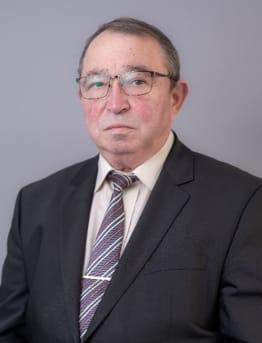
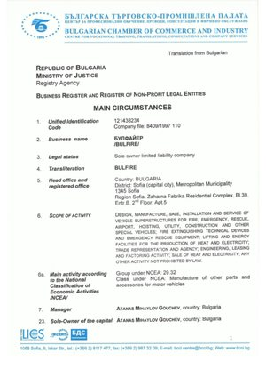
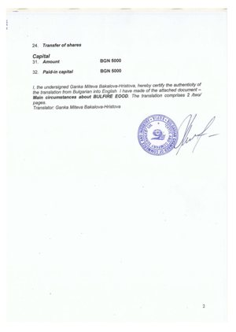
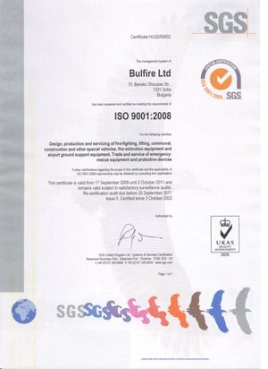
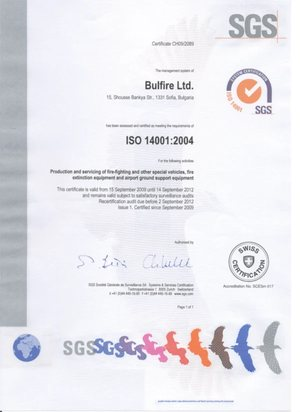
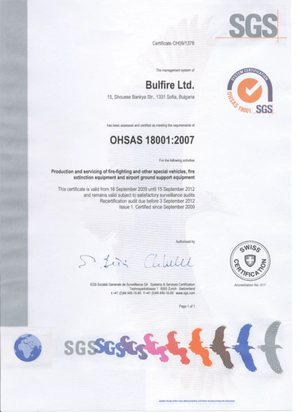
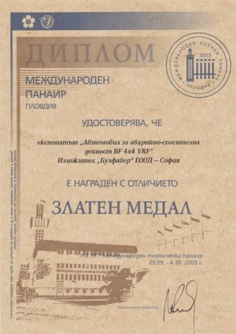
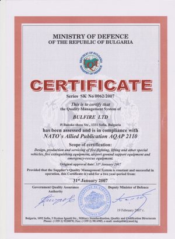
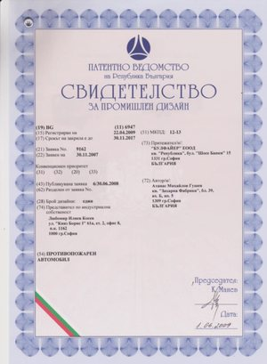

ЗА НАС
Свържете се с нашия екипECOES JV
ECOES JV (съвместно предприятие ECO ENGINEERING SYSTEMS) е обединение на компаниите: ECOES Ltd. Великобритания и BULFIRE ECOES Ltd. ЕС.
-
ECOES Ltd. Лондон
Британска търговска компания
-
BULFIRE ECOES Ltd. София
Производствена компания в ЕС
Главен изпълнителен директор и собственик на съвместното предприятие и на всички компании в него е д-р инж. Атанас Гушев

Д-р инж. Атанас Гушев има 45 години опит в автомобилната индустрия, от които 15 години в държавната администрация и 30 години в частния сектор.
Притежава две инженерни магистърски степени и докторска степен:
- магистър инженер по двигатели с вътрешно горене,
- магистър инженер по ремонт и експлоатация на автомобилна и тракторна техника,
- доктор по екологичните аспекти на автомобилните двигатели.
През тези 45 години д-р инж. Атанас Гушев е участвал в създаването и управлението на сложни инженерни проекти, свързани с производството и трансформацията на специализирана мобилна техника.
-
ECOES Ltd. (Великобритания) управлява износа от Великобритания и международните търговски операции.
-
BULFIRE ECOES Ltd. (България, ЕС) отговаря за производството и сервизните дейности, включително доставката на шасита без надстройка, оборудвани с CNG, LPG и електрически двигатели, както и монтажа и оборудването на специализирани надстройки. Компанията извършва и конверсия на нови и употребявани дизелови камиони, автобуси, строителна и селскостопанска техника за работа с CNG, LPG или електрическо задвижване.
BULFIRE ECOES Ltd. е обособено поделение на BULFIRE Ltd., създадено специално за извършване на ECOES конверсии. Вече 30 години BULFIRE Ltd. произвежда сложни транспортни средства по поръчка на институционални клиенти. По-долу е представена кратка информация за специализацията на компаниите, работещи под името BULFIRE:
Стратегическо търговско партньорство: KINTEX SHC
Чрез партньорството ни с KINTEX SHC — 100% държавната външнотърговска корпорация на България, основана през 1966 г. — търговските операции на ECOES се ползват с институционална надеждност от най-високо ниво. Клиентите и международните купувачи могат да сключват договори за закупуване и доставка както директно чрез дружествата на ECOES JV, така и чрез KINTEX SHC, което гарантира безпроблемно спазване на междуправителствените изисквания, структурирано търговско финансиране и изпълнение на износа на световните пазари.
ИСТОРИЯ
„БУЛФАЙЪР“ ООД е регистрирана през 1997 г. с предмет на дейност проектиране, производство и сервиз на товарни автомобили със специално предназначение – пожарни, аварийно-спасителни, летищни, комунални, селскостопански, подемно-транспортни и други специални превозни средства.
През 2002 г. „БУЛФАЙЪР“ ООД въведе системи за управление на качеството ISO 9001, ISO 14001 и ISO 18001 (OHSAS) за проектиране, производство и сервиз на специализирани товарни автомобили, за които компанията е сертифицирана от SGS London.
-

Търговски регистърОсновни обстоятелства, стр. 1 от 2
-

Търговски регистърОсновни обстоятелства, стр. 2 от 2
-

ISO 9001:2008Сертификат на SGS HU02/56832
-

ISO 14001:2004Сертификат на SGS CH09/2089
-

OHSAS 18001:2007Сертификат на SGS CH09/1378


-

Златен медал59-и Международен технически панаир, Пловдив, 2003 г.
През 2003 г. „БУЛФАЙЪР“ ООД участва в 59-ия Международен технически панаир в гр. Пловдив. 2619 фирми от 42 различни страни участват в този технически панаир (425 фирми от Германия, 274 от Италия, 111 от Чехия и др.). На това най-голямо техническо изложение „БУЛФАЙЪР“ ООД е наградена със златен медал за специално аварийно-спасително превозно средство 4×4, проектирано и произведено от компанията.
-

AQAP 2110 на НАТОСертификат на Министерството на отбраната SK № 0062/2007
През 2004 г. „БУЛФАЙЪР“ ООД покри изискванията на НАТО за управление на качеството при проектирането, производството и обслужването на летищно и друго специално оборудване, за което компанията е сертифицирана за съответствие с изискванията на съюзническата публикация на НАТО AQAP 2110.
-

Промишлен дизайн № 6947Патентно ведомство на Република България: противопожарен автомобил
Пожарните автомобили, проектирани и произведени от BULFIRE Ltd., са патентовани през 2007 г.